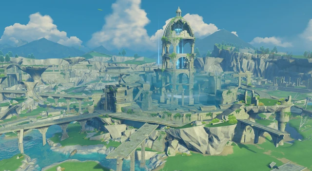

Mondstadt · Ancient Civilizations
Old Mondstadt and Decarabian
Old Mondstadt stood at present-day Stormterror’s Lair about 2,600 years ago. Decarabian’s storm wall, the rebellion that killed him, and Barbatos’s rise survive in character stories, quests, and weapon lore that do not offer a single complete account.

Decarabian’s storm-walled city
Old Mondstadt stood where Stormterror’s Lair is today, about 2,600 years before the present. Decarabian, the God of Storms, ruled from a tower and sealed the city behind a hurricane. In Venti’s account, even birds could not enter or leave, and the people could not see the open sky.
The storm wall is also described as protection during Decarabian’s conflict with Boreas, the wolf god also known as Andrius. Decarabian’s stated intent to shelter the city does not erase the way its inhabitants experienced the barrier. The story preserves both the protective claim and the people’s desire to live beyond it.
The rebellion
The rebellion brought together the Nameless Bard, a small wind spirit, Amos, Gunnhildr, and a red-haired warrior. The wind spirit was a friend of the bard and later became Barbatos. Amos’s Bow describes Amos as having loved Decarabian before joining the revolt, but that weapon story is one account among several pieces of lore.
Decarabian was killed by his own people during the Archon War. His death ended the old ruler’s control and opened the Anemo Archon seat. The rebellion was not simply a battle between gods: it was a movement by people living under the storm wall, assisted by a wind spirit who shared their wish for a different life.
Boreas and Barbatos
After Decarabian’s death, Boreas judged himself unfit to rule humanity and declined the vacant seat. He used his winds to nurture the new Mondstadt instead. The wind spirit, empowered by the faith of the rebels, became Barbatos and took the bard’s form after the bard died.
This sequence matters because Barbatos did not simply absorb Decarabian’s power. The surviving accounts describe a rebellion, a separate decision by Boreas, and the wind spirit’s rise to Archon. Old Mondstadt’s ruins remain at Stormterror’s Lair while the people built the city that bears the name Mondstadt today.
Reading the records together
Venti’s Story Quest gives a first-person account of the city’s barrier and his friendship with the bard. Venti’s character stories, Amos’s Bow, and the Boreal Wolf materials fill in the other rebels, the conflict with Boreas, and the choice of Archon.
These sources do not provide a single exhaustive chronicle. They leave details of the rebels’ private relationships, the battle’s exact sequence, and the transition to the new city partly open.
This is an original CoreGG reading guide, not an official HoYoverse article or a reproduction of the game text. Source links below identify the records used so you can check the original context.
Sources & references
Check these sources for the original game text and reference trail.